Distributed Message Queue¶
In this chapter, we explore a popular question in system design interviews: design a distributed message queue. In modern architecture, systems are broken up into small and independent building blocks with well-defined interfaces between them. Message queues provide communication and coordination for those building blocks. What benefits do message queues bring?
-
Decoupling. Message queues eliminate the tight coupling between components so they can be updated independently.
-
Improved scalability. We can scale producers and consumers independently based on traffic load. For example, during peak hours, more consumers can be added to handle the increased traffic.
-
Increased availability. If one part of the system goes offline, the other components can continue to interact with the queue.
-
Better performance. Message queues make asynchronous communication easy. Producers can add messages to a queue without waiting for the response and consumers consume messages whenever they are available. They don’t need to wait for each other.
Figure 1 shows some of the most popular distributed message queues on the market.
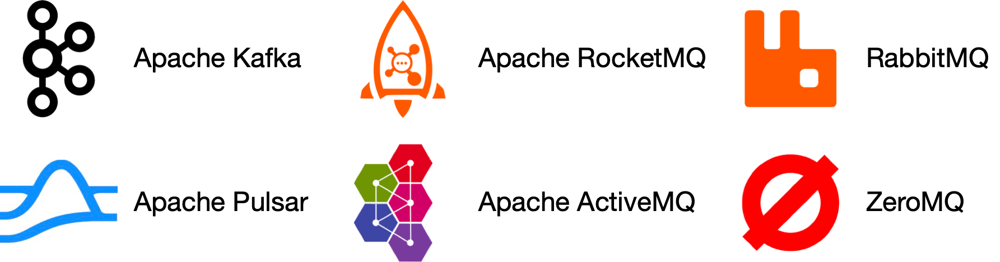
Figure 1 Popular distributed message queues
Message queues vs event streaming platforms
Strictly speaking, Apache Kafka and Pulsar are not message queues as they are event streaming platforms. However, there is a convergence of features that starts to blur the distinction between message queues (RocketMQ, ActiveMQ, RabbitMQ, ZeroMQ, etc.) and event streaming platforms (Kafka, Pulsar). For example, RabbitMQ, which is a typical message queue, added an optional streaming feature to allow repeated message consumption and long message retention, and its implementation uses an append-only log, much like an event streaming platform would. Apache Pulsar is primarily a Kafka competitor, but it is also flexible and performant enough to be used as a typical distributed message queue.
In this chapter, we will design a distributed message queue with additional features, such as long data retention, repeated consumption of messages, etc., that are typically only available on event streaming platforms. These additional features make the design more complicated. Throughout the chapter, we will highlight places where the design could be simplified if the focus of your interview centers around the more traditional distributed message queues.
Step 1 - Understand the Problem and Establish Design Scope¶
In a nutshell, the basic functionality of a message queue is straightforward: producers send messages to a queue, and consumers consume messages from it. Beyond this basic functionality, there are other considerations including performance, message delivery semantics, data retention, etc. The following set of questions will help clarify requirements and narrow down the scope.
Candidate: What’s the format and average size of messages? Is it text only? Is multimedia allowed?
Interviewer: Text messages only. Messages are generally measured in the range of kilobytes (KBs).
Candidate: Can messages be repeatedly consumed?
Interviewer: Yes, messages can be repeatedly consumed by different consumers. Note that this is an added feature. A traditional distributed message queue does not retain a message once it has been successfully delivered to a consumer. Therefore, a message cannot be repeatedly consumed in a traditional message queue.
Candidate: Are messages consumed in the same order they were produced?
Interviewer: Yes, messages should be consumed in the same order they were produced. Note that this is an added feature. A traditional distributed message queue does not usually guarantee delivery orders.
Candidate: Does data need to be persisted and what is the data retention?
Interviewer: Yes, let’s assume data retention is two weeks. This is an added feature. A traditional distributed message queue does not retain messages.
Candidate: How many producers and consumers are we going to support?
Interviewer: The more the better.
Candidate: What’s the data delivery semantic we need to support? For example, at-most-once, at-least-once, and exactly once.
Interviewer: We definitely want to support at-least-once. Ideally, we should support all of them and make them configurable.
Candidate: What’s the target throughput and end-to-end latency?
Interviewer: It should support high throughput for use cases like log aggregation. It should also support low latency delivery for more traditional message queue use cases.
With the above conversation, let’s assume we have the following functional requirements:
-
Producers send messages to a message queue.
-
Consumers consume messages from a message queue.
-
Messages can be consumed repeatedly or only once.
-
Historical data can be truncated.
-
Message size is in the kilobyte range.
-
Ability to deliver messages to consumers in the order they were added to the queue.
-
Data delivery semantics (at-least-once, at-most-once, or exactly-once) can be configured by users.
Non-functional requirements¶
-
High throughput or low latency, configurable based on use cases.
-
Scalable. The system should be distributed in nature. It should be able to support a sudden surge in message volume.
-
Persistent and durable. Data should be persisted on disk and replicated across multiple nodes.
Adjustments for traditional message queues¶
Traditional message queues like RabbitMQ do not have as strong a retention requirement as event streaming platforms. Traditional queues retain messages in memory just long enough for them to be consumed. They provide on-disk overflow capacity [1] which is several orders of magnitude smaller than the capacity required for event streaming platforms. Traditional message queues do not typically maintain message ordering. The messages can be consumed in a different order than they were produced. These differences greatly simplify the design which we will discuss where appropriate.
Step 2 - Propose High-Level Design and Get Buy-In¶
First, let’s discuss the basic functionalities of a message queue.
Figure 2 shows the key components of a message queue and the simplified interactions between these components.
Figure 2 Key components in a message queue
-
Producer sends messages to a message queue.
-
Consumer subscribes to a queue and consumes the subscribed messages.
-
Message queue is a service in the middle that decouples the producers from the consumers, allowing each of them to operate and scale independently.
-
Both producer and consumer are clients in the client/server model, while the message queue is the server. The clients and servers communicate over the network.
Messaging models¶
The most popular messaging models are point-to-point and publish-subscribe.
Point-to-point¶
This model is commonly found in traditional message queues. In a point-to-point model, a message is sent to a queue and consumed by one and only one consumer. There can be multiple consumers waiting to consume messages in the queue, but each message can only be consumed by a single consumer. In Figure 3, message A is only consumed by consumer 1.
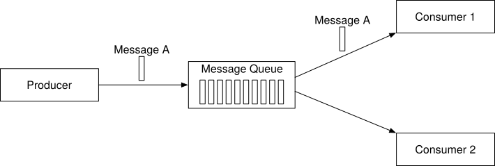
Figure 3 Point-to-point model
Once the consumer acknowledges that a message is consumed, it is removed from the queue. There is no data retention in the point-to-point model. In contrast, our design includes a persistence layer that keeps the messages for two weeks, which allows messages to be repeatedly consumed.
While our design could simulate a point-to-point model, its capabilities map more naturally to the publish-subscribe model.
Publish-subscribe¶
First, let’s introduce a new concept, the topic. Topics are the categories used to organize messages. Each topic has a name that is unique across the entire message queue service. Messages are sent to and read from a specific topic.
In the publish-subscribe model, a message is sent to a topic and received by the consumers subscribing to this topic. As shown in Figure 4, message A is consumed by both consumer 1 and consumer 2.
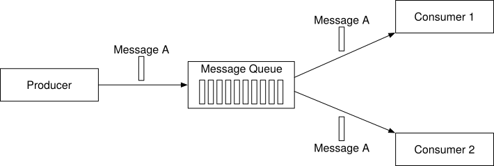
Figure 4 Publish-subscribe model
Our distributed message queue supports both models. The publish-subscribe model is implemented by topics, and the point-to-point model can be simulated by the concept of the consumer group, which will be introduced in the consumer group section.
Topics, partitions, and brokers¶
As mentioned earlier, messages are persisted by topics. What if the data volume in a topic is too large for a single server to handle?
One approach to solve this problem is called partition (sharding). As Figure 5 shows, we divide a topic into partitions and deliver messages evenly across partitions. Think of a partition as a small subset of the messages for a topic. Partitions are evenly distributed across the servers in the message queue cluster. These servers that hold partitions are called brokers. The distribution of partitions among brokers is the key element to support high scalability. We can scale the topic capacity by expanding the number of partitions.
Figure 5 Partitions
Each topic partition operates in the form of a queue with the FIFO (first in, first out) mechanism. This means we can keep the order of messages inside a partition. The position of a message in the partition is called an offset.
When a message is sent by a producer, it is actually sent to one of the partitions for the topic. Each message has an optional message key (for example, a user’s ID), and all messages for the same message key are sent to the same partition. If the message key is absent, the message is randomly sent to one of the partitions.
When a consumer subscribes to a topic, it pulls data from one or more of these partitions. When there are multiple consumers subscribing to a topic, each consumer is responsible for a subset of the partitions for the topic. The consumers form a consumer group for a topic.
The message queue cluster with brokers and partitions is represented in Figure 6.
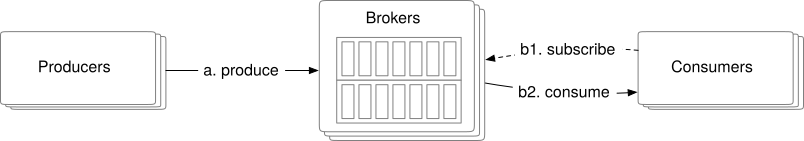
Figure 6 Message queue cluster
Consumer group¶
As mentioned earlier, we need to support both point-to-point and publish-subscribe models. A consumer group is a set of consumers, working together to consume messages from topics.
Consumers can be organized into groups. Each consumer group can subscribe to multiple topics and maintain its own consuming offsets. For example, we can group consumers by use cases, one group for billing and the other for accounting.
The instances in the same group can consume traffic in parallel, as in Figure 7.
-
Consumer group 1 subscribes to topic A.
-
Consumer group 2 subscribes to both topics A and B.
-
Topic A is subscribed by both consumer groups 1 and 2, which means the same message is consumed by multiple consumers. This pattern supports the subscribe/publish model.
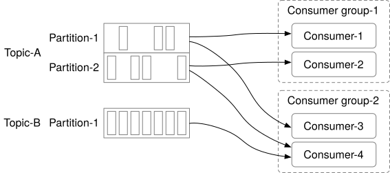
Figure 7 Consumer groups
However, there is one problem. Reading data in parallel improves the throughput, but the consumption order of messages in the same partition cannot be guaranteed. For example, if consumer 1 and consumer 2 both read from partition 1, we will not be able to guarantee the message consumption order in partition 1.
The good news is we can fix this by adding a constraint, that a single partition can only be consumed by one consumer in the same group. If the number of consumers of a group is larger than the number of partitions of a topic, some consumers will not get data from this topic. For example, in Figure 7, consumer 3 in group 2 cannot consume messages from topic B because it is consumed by Consumer-4 in the same consumer group, already.
With this constraint, if we put all consumers in the same consumer group, then messages in the same partition are consumed by only one consumer, which is equivalent to the point-to-point model. Since a partition is the smallest storage unit, we can allocate enough partitions in advance to avoid the need to dynamically increase the number of partitions. To handle high scale, we just need to add consumers.
High-Level architecture¶
Figure 8 shows the updated high-level design.
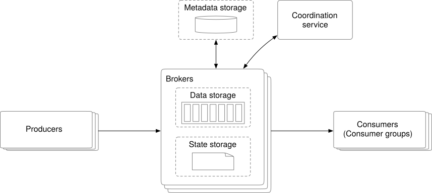
Figure 8 High-level design
Clients
-
Producer: pushes messages to specific topics.
-
Consumer group: subscribes to topics and consumes messages.
Core service and storage
-
Broker: holds multiple partitions. A partition holds a subset of messages for a topic.
-
Storage:
-
Data storage: messages are persisted in data storage in partitions.
-
State storage: consumer states are managed by state storage.
-
Metadata storage: configuration and properties of topics are persisted in metadata storage.
-
Coordination service:
-
Service discovery: which brokers are alive.
-
Leader election: one of the brokers is selected as the active controller. There is only one active controller in the cluster. The active controller is responsible for assigning partitions.
-
Apache Zookeeper [2] or etcd [3] are commonly used to elect a controller.
Step 3 - Design Deep Dive¶
To achieve high throughput while satisfying the high data retention requirement, we made three important design choices, which we explain in detail now.
-
We chose an on-disk data structure that takes advantage of the great sequential access performance of rotational disks and the aggressive disk caching strategy of modern operating systems.
-
We designed the message data structure to allow a message to be passed from the producer to the queue and finally to the consumer, with no modifications. This minimizes the need for copying which is very expensive in a high volume and high traffic system.
-
We designed the system to favor batching. Small I/O is an enemy of high throughput. So, wherever possible, our design encourages batching. The producers send messages in batches. The message queue persists messages in even larger batches. The consumers fetch messages in batches when possible, too.
Data storage¶
Now let’s explore the options to persist messages in more detail. In order to find the best choice, let’s consider the traffic pattern of a message queue.
-
Write-heavy, read-heavy.
-
No update or delete operations. As a side note, a traditional message queue does not persist messages unless the queue falls behind, in which case there will be “delete” operations when the queue catches up. What we are talking about here is the persistence of a data streaming platform.
-
Predominantly sequential read/write access.
Option 1: Database
The first option is to use a database.
-
Relational database: create a topic table and write messages to the table as rows.
-
NoSQL database: create a collection as a topic and write messages as documents.
Databases can handle the storage requirement, but they are not ideal because it is hard to design a database that supports both write-heavy and read-heavy access patterns at a large scale. The database solution does not fit our specific data usage patterns very well.
This means a database is not the best choice and could become a bottleneck of the system.
Option 2: Write-ahead log (WAL)
The second option is write-ahead log (WAL). WAL is just a plain file where new entries are appended to an append-only log. WAL is used in many systems, such as the redo log in MySQL and the WAL in ZooKeeper.
We recommend persisting messages as WAL log files on disk. WAL has a pure sequential read/write access pattern. The disk performance of sequential access is very good [4]. Also, rotational disks have large capacity and they are pretty affordable.
As shown in Figure 9, a new message is appended to the tail of a partition, with a monotonically increasing offset. The easiest option is to use the line number of the log file as the offset. However, a file cannot grow infinitely, so it is a good idea to divide it into segments.
With segments, new messages are appended only to the active segment file. When the active segment reaches a certain size, a new active segment is created to receive new messages, and the currently active segment becomes inactive, like the rest of the non-active segments. Non-active segments only serve read requests. Old non-active segment files can be truncated if they exceed the retention or capacity limit.
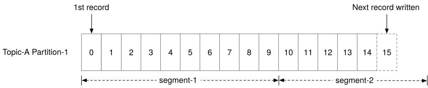
Figure 9 Append new messages
Segment files of the same partition are organized in a folder named “Partition-{:partition_id}”. The structure is shown in Figure 10.
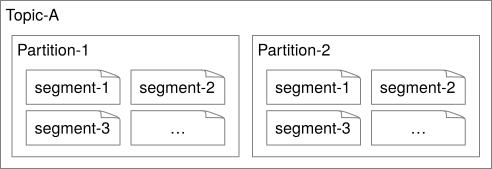
Figure 10 Data segment file distribution in topic partitions
A note on disk performance
To meet the high data retention requirement, our design relies heavily on disk drives to hold a large amount of data. There is a common misconception that rotational disks are slow, but this is really only the case for random access. For our workload, as long as we design our on-disk data structure to take advantage of the sequential access pattern, the modern disk drives in a RAID configuration (i.e., with disks striped together for higher performance) could comfortably achieve several hundred MB/sec of read and write speed. This is more than enough for our needs, and the cost structure is favorable.
Also, a modern operating system caches disk data in main memory very aggressively, so much so that it would happily use all available free memory to cache disk data. The WAL takes advantage of the heavy OS disk caching, too, as we described above.
Message data structure¶
The data structure of a message is key to high throughput. It defines the contract between the producers, message queue, and consumers. Our design achieves high performance by eliminating unnecessary data copying while the messages are in transit from the producers to the queue and finally to the consumers. If any parts of the system disagree on this contract, messages will need to be mutated which involves expensive copying. It could seriously hurt the performance of the system.
Below is a sample schema of the message data structure:
| Field Name | Data Type |
|---|---|
| key | byte[] |
| value | byte[] |
| topic | string |
| partition | integer |
| offset | long |
| timestamp | long |
| size | integer |
| crc [5] | integer |
Table 1 Data schema of a message
Message key¶
The key of the message is used to determine the partition of the message. If the key is not defined, the partition is randomly chosen. Otherwise, the partition is chosen by hash(key) % numPartitions. If we need more flexibility, the producer can define its own mapping algorithm to choose partitions. Please note that the key is not equivalent to the partition number.
The key can be a string or a number. It usually carries some business information. The partition number is a concept in the message queue, which should not be explicitly exposed to clients.
With a proper mapping algorithm, if the number of partitions changes, messages can still be evenly sent to all the partitions.
Message value¶
The message value is the payload of a message. It can be plain text or a compressed binary block.
| Reminder |
|---|
| The key and value of a message are different from the key-value pair in a key-value (KV) store. In the KV store, keys are unique, and we can find the value by key. In a message, keys do not need to be unique. Sometimes they are not even mandatory, and we don’t need to find a value by key. |
Other fields of a message¶
-
Topic: the name of the topic that the message belongs to.
-
Partition: the ID of the partition that the message belongs to.
-
Offset: the position of the message in the partition. We can find a message via the combination of three fields: topic, partition, offset.
-
Timestamp: the timestamp of when this message is stored.
-
Size: the size of this message.
-
CRC: Cyclic redundancy check (CRC) is used to ensure the integrity of raw data.
To support additional features, some optional fields can be added on demand. For example, messages can be filtered by tags, if tags are part of the optional fields.
Batching¶
Batching is pervasive in this design. We batch messages in the producer, the consumer, and the message queue itself. Batching is critical to the performance of the system. In this section, we focus primarily on batching in the message queue. We discuss batching for producer and consumer in more detail, shortly.
Batching is critical to improving performance because:
-
It allows the operating system to group messages together in a single network request and amortizes the cost of expensive network round trips.
-
The broker writes messages to the append logs in large chunks, which leads to larger blocks of sequential writes and larger contiguous blocks of disk cache, maintained by the operating system. Both lead to much greater sequential disk access throughput.
There is a tradeoff between throughput and latency. If the system is deployed as a traditional message queue where latency might be more important, the system could be tuned to use a smaller batch size. Disk performance will suffer a little bit in this use case. If tuned for throughput, there might need to be a higher number of partitions per topic, to make up for the slower sequential disk write throughput.
So far, we’ve covered the main disk storage subsystem and its associated on-disk data structure. Now, let’s switch gears and discuss the producer and consumer flows. Then we will come back and finish the deep dive into the rest of the message queue.
Producer flow¶
If a producer wants to send messages to a partition, which broker should it connect to? The first option is to introduce a routing layer. All messages sent to the routing layer are routed to the “correct” broker. If the brokers are replicated, the “correct” broker is the leader replica. We will cover replication later.
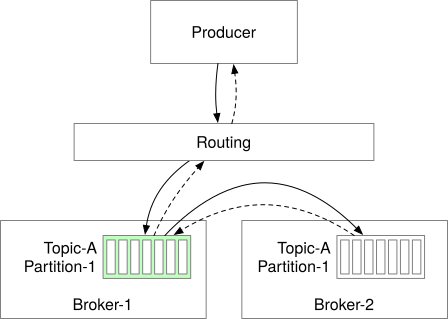
Figure 11 Routing layer
As shown in Figure 11, the producer tries to send messages to partition 1 of topic A.
-
The producer sends messages to the routing layer.
-
The routing layer reads the replica distribution plan1 from the metadata storage and caches it locally. When a message arrives, it routes the message to the leader replica of partition 1, which is stored in broker 1.
-
The leader replica receives the message and follower replicas pull data from the leader.
-
When “enough” replicas have synchronized the message, the leader commits the data (persisted on disk), which means the data can be consumed. Then it responds to the producer.
You might be wondering why we need both leader and follower replicas. The reason is fault tolerance. We dive deep into this process in the “In-sync replicas” section.
This approach works, but it has a few drawbacks:
-
A new routing layer means additional network latency caused by overhead and additional network hops.
-
Request batching is one of the big drivers of efficiency. This design doesn’t take that into consideration.
Figure 12 shows the improved design.
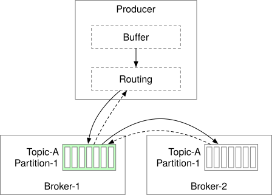
Figure 12 Producer with buffer and routing
The routing layer is wrapped into the producer and a buffer component is added to the producer. Both can be installed in the producer as part of the producer client library. This change brings several benefits:
-
Fewer network hops mean lower latency.
-
Producers can have their own logic to determine which partition the message should be sent to.
-
Batching buffers messages in memory and sends out larger batches in a single request. This increases throughput.
The choice of the batch size is a classic tradeoff between throughput and latency (Figure 13). With a large batch size, the throughput increases but latency is higher, due to a longer wait time to accumulate the batch. With a small batch size, requests are sent sooner so the latency is lower, but throughput suffers. Producers can tune the batch size based on use cases.
Figure 13 The choice of the batch size
Consumer flow¶
The consumer specifies its offset in a partition and receives back a chunk of events beginning from that position. An example is shown in Figure 14.
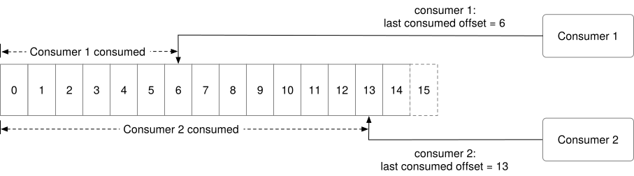
Figure 14 Consumer flow
Push vs pull¶
An important question to answer is whether brokers should push data to consumers, or if consumers should pull data from the brokers.
Push model
Pros:
- Low latency. The broker can push messages to the consumer immediately upon receiving them.
Cons:
-
If the rate of consumption falls below the rate of production, consumers could be overwhelmed.
-
It is difficult to deal with consumers with diverse processing power because the brokers control the rate at which data is transferred.
Pull model
Pros:
-
Consumers control the consumption rate. We can have one set of consumers process messages in real-time and another set of consumers process messages in batch mode.
-
If the rate of consumption falls below the rate of production, we can scale out the consumers, or simply catch up when it can.
-
The pull model is more suitable for batch processing. In the push model, the broker has no knowledge of whether consumers will be able to process messages immediately. If the broker sends one message at a time to the consumer and the consumer is backed up, new messages will end up waiting in the buffer. A pull model pulls all available messages after the consumer’s current position in the log (or up to the configurable max size). It is suitable for aggressive batching of data.
Cons:
- When there is no message in the broker, a consumer might still keep pulling data, wasting resources. To overcome this issue, many message queues support long polling mode, which allows pulls to wait a specified amount of time for new messages [6].
Based on these considerations, most message queues choose the pull model.
Figure 15 shows the workflow of the consumer pull model.
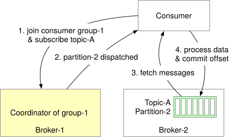
Figure 15 Pull model
-
A new consumer wants to join group 1 and subscribes to topic A. It finds the corresponding broker node by hashing the group name. By doing so, all the consumers in the same group connect to the same broker, which is also called the coordinator of this consumer group. Despite the naming similarity, the consumer group coordinator is different from the coordination service mentioned in Figure 8. This coordinator coordinates the consumer group, while the coordination service mentioned earlier coordinates the broker cluster.
-
The coordinator confirms that the consumer has joined the group and assigns partition 2 to the consumer. There are different partition assignment strategies including round-robin, range, etc. [7]
-
Consumer fetches messages from the last consumed offset, which is managed by the state storage.
-
Consumer processes messages and commits the offset to the broker. The order of data processing and offset committing affects the message delivery semantics, which will be discussed shortly.
Consumer rebalancing¶
Consumer rebalancing decides which consumer is responsible for which subset of partitions. The process could occur when a consumer joins, when a consumer leaves, when a consumer crashes, or when partitions are adjusted.
When consumer rebalancing occurs, the coordinator plays an important role. Let’s first take a look at what a coordinator is. The coordinator is one of the brokers responsible for communicating with consumers to achieve consumer rebalancing. The coordinator receives heartbeat from consumers and manages their offset on the partitions.
Let’s use an example to understand how the coordinator and the consumers work together.
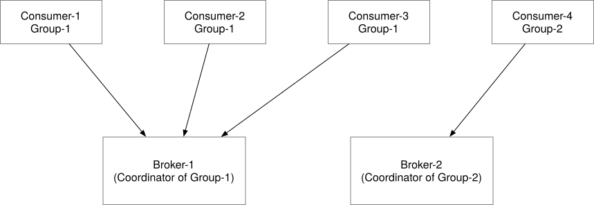
Figure 16 Coordinator of consumer groups
-
As shown in Figure 16, each consumer belongs to a group. It finds the dedicated coordinator by hashing the group name. All consumers from the same group are connected to the same coordinator.
-
The coordinator maintains a joined consumer list. When the list changes, the coordinator elects a new leader of the group.
-
As the new leader of the consumer group, it generates a new partition dispatch plan and reports it back to the coordinator. The coordinator will broadcast the plan to the other consumers in the group.
In a distributed system, consumers might encounter all sorts of issues including network issues, crashes, restarts, etc. From the coordinator's perspective, they will no longer have heartbeats. When this happens, the coordinator will trigger a rebalance process to re-dispatch the partitions as illustrated in Figure 17.
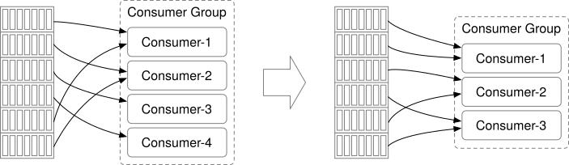
Figure 17 Consumer rebalance
Let’s simulate a few rebalance scenarios. Assume there are 2 consumers in the group, and 4 partitions in the subscribed topic. Figure 18 shows the flow when a new consumer B joins the group.
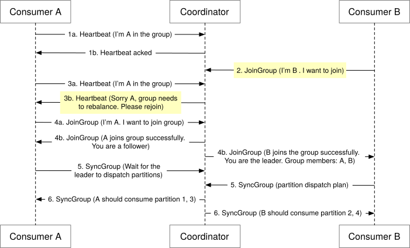
Figure 18 New consumer joins
-
Initially, only consumer A is in the group. It consumes all the partitions and keeps the heartbeat with the coordinator.
-
Consumer B sends a request to join the group.
-
The coordinator knows it’s time to rebalance, so it notifies all the consumers in the group in a passive way. When A’s heartbeat is received by the coordinator, it asks A to rejoin the group.
-
Once all the consumers have rejoined the group, the coordinator chooses one of them as the leader and informs all the consumers about the election result.
-
The leader consumer generates the partition dispatch plan and sends it to the coordinator. Follower consumers ask the coordinator about the partition dispatch plan.
-
Consumers start consuming messages from newly assigned partitions.
Figure 19 shows the flow when an existing consumer A leaves the group.
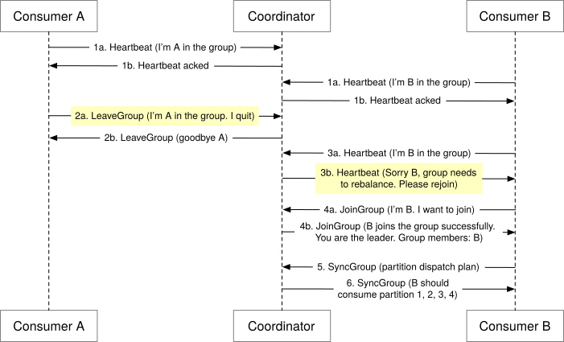
Figure 19 Existing consumer leaves
-
Consumer A and B are in the same consumer group.
-
Consumer A needs to be shut down, so it requests to leave the group.
-
The coordinator knows it’s time to rebalance. When B’s heartbeat is received by the coordinator, it asks B to rejoin the group.
-
The remaining steps are the same as the ones shown in Figure 18.
Figure 20 shows the flow when an existing consumer A crashes.
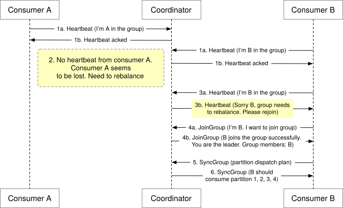
Figure 20 Existing consumer crashes
-
Consumer A and B keep heartbeats with the coordinator.
-
Consumer A crashes, so there is no heartbeat sent from consumer A to the coordinator. Since the coordinator doesn’t get any heartbeat signal within a specified amount of time from consumer A, it marks the consumer as dead.
-
The coordinator triggers the rebalance process.
-
The following steps are the same as the ones in the previous scenario.
Now that we finished the detour on producer and consumer flows, let’s come back and finish the deep dive on the rest of the message queue broker.
State storage¶
In the message queue broker, the state storage stores:
-
The mapping between partitions and consumers.
-
The last consumed offsets of consumer groups for each partition. As shown in Figure 21, the last consumed offset for consumer group 1 is 6 and the offset for consumer group 2 is 13.
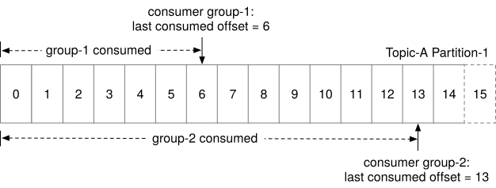
Figure 21 Last consumed offset of consumer groups
For example, as shown in Figure 21, a consumer in group 1 consumes messages from the partition in sequence and commits the consumed offset 6. This means all the messages before and at offset 6 are already consumed. If the consumer crashes, another new consumer in the same group will resume consumption by reading the last consumed offset from the state storage.
The data access patterns for consumer states are:
-
Frequent read and write operations but the volume is not high.
-
Data is updated frequently and is rarely deleted.
-
Random read and write operations.
-
Data consistency is important.
Lots of storage solutions can be used for storing the consumer state data. Considering the data consistency and fast read/write requirements, a KV store like Zookeeper is a great choice. Kafka has moved the offset storage from Zookeeper to Kafka brokers. Interested readers can read the reference material [8] to learn more.
Metadata storage¶
The metadata storage stores the configuration and properties of topics, including a number of partitions, retention period, and distribution of replicas.
Metadata does not change frequently and the data volume is small, but it has a high consistency requirement. Zookeeper is a good choice for storing metadata.
ZooKeeper¶
By reading previous sections, you probably have already sensed that Zookeeper is very helpful for designing a distributed message queue. If you are not familiar with it, Zookeeper is an essential service for distributed systems offering a hierarchical key-value store. It is commonly used to provide a distributed configuration service, synchronization service, and naming registry [2].
ZooKeeper is used to simplify our design as shown in Figure 22.
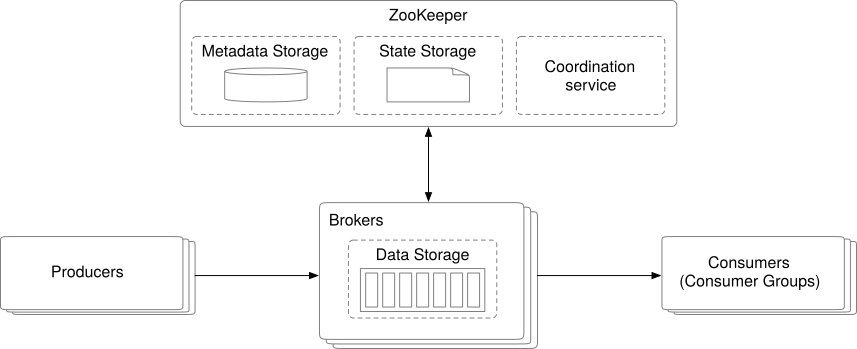
Figure 22 Zookeeper
Let’s briefly go over the change.
-
Metadata and state storage are moved to Zookeeper.
-
The broker now only needs to maintain the data storage for messages.
-
Zookeeper helps with the leader election of the broker cluster.
Replication¶
In distributed systems, hardware issues are common and cannot be ignored. Data gets lost when a disk is damaged or fails permanently. Replication is the classic solution to achieve high availability.
As in Figure 23, each partition has 3 replicas, distributed across different broker nodes.
For each partition, the highlighted replicas are the leaders and the others are followers. Producers only send messages to the leader replica. The follower replicas keep pulling new messages from the leader. Once messages are synchronized to enough replicas, the leader returns an acknowledgment to the producer. We will go into detail about how to define “enough” in the In-sync Replicas section below.
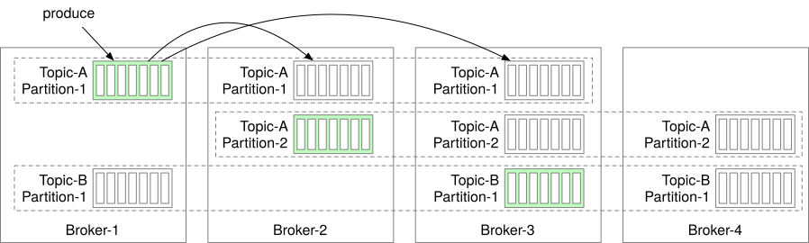
Figure 23 Replication
The distribution of replicas for each partition is called a replica distribution plan. For example, the replica distribution plan in Figure 23 can be described as:
-
Partition 1 of topic A: 3 replicas, leader in broker 1, followers in broker 2 and 3;
-
Partition 2 of topic A: 3 replicas, leader in broker 2, followers in broker 3 and 4;
-
Partition 1 of topic B: 3 replicas, leader in broker 3, followers in broker 4 and 1.
Who makes the replica distribution plan? It works as follows; with the help of the coordination service, one of the broker nodes is elected as the leader. It generates the replica distribution plan and persists the plan in metadata storage. All the brokers now can work according to the plan.
If you are interested in knowing more about replications, check out “Chapter 5. Replication” of the book “Design Data-Intensive Applications” [9].
In-sync replicas¶
We mentioned that messages are persisted in multiple partitions to avoid single node failure, and each partition has multiple replicas. Messages are only written to the leader, and followers synchronize data from the leader. One problem we need to solve is keeping them in sync.
In-sync replicas (ISR) refer to replicas that are “in-sync” with the leader. The definition of “in-sync” depends on the topic configuration. For example, if the value of replica.lag.max.messages is 4, it means that as long as the follower is behind the leader by no more than 3 messages, it will not be removed from ISR [10]. The leader is an ISR by default.
Let’s use an example as shown in Figure 24 to show how ISR works.
-
The committed offset in the leader replica is 13. Two new messages are written to the leader, but not committed yet. Committed offset means that all messages before and at this offset are already synchronized to all the replicas in ISR.
-
Replica-2 and replica-3 have fully caught up with the leader, so they are in ISR and can fetch new messages.
-
Replica-4 did not fully catch up with the leader within the configured lag time, so it is not in ISR. When it catches up again, it can be added to ISR.
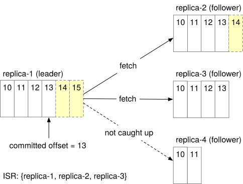
Figure 24 How ISR works
Why do we need ISR? The reason is that ISR reflects the trade-off between performance and durability. If producers don’t want to lose any messages, the safest way to do that is to ensure all replicas are already in sync before sending an acknowledgment. But a slow replica will cause the whole partition to become slow or unavailable.
Now that we’ve discussed ISR, let’s take a look at acknowledgment settings. Producers can choose to receive acknowledgments until the K number of ISRs has received the message, where K is configurable.
ACK=all
Figure 25 illustrates the case with ACK=all. With ACK=all, the producer gets an ACK when all ISRs have received the message. This means it takes a longer time to send a message because we need to wait for the slowest ISR, but it gives the strongest message durability.
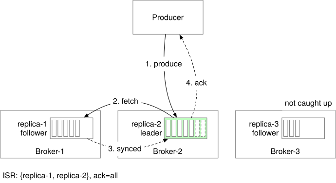
Figure 25 ack=all
ACK=1
With ACK=1, the producer receives an ACK once the leader persists the message. The latency is improved by not waiting for data synchronization. If the leader fails immediately after a message is acknowledged but before it is replicated by follower nodes, then the message is lost. This setting is suitable for low latency systems where occasional data loss is acceptable.
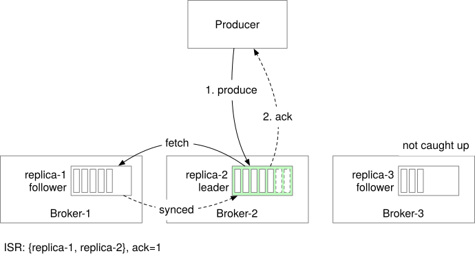
Figure 26 ack=1
ACK=0
The producer keeps sending messages to the leader without waiting for any acknowledgment, and it never retries. This method provides the lowest latency at the cost of potential message loss. This setting might be good for use cases like collecting metrics or logging data since data volume is high and occasional data loss is acceptable.
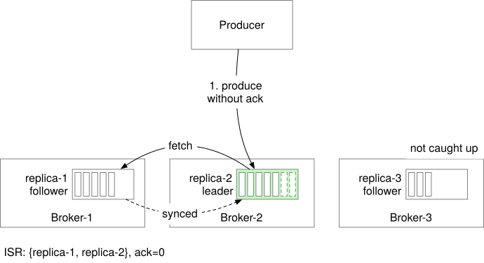
Figure 27 ack=0
Configurable ACK allows us to trade durability for performance.
Now let’s look at the consumer side. The easiest setup is to let consumers connect to a leader replica to consume messages.
You might be wondering if the leader replica would be overwhelmed by this design and why messages are not read from ISRs. The reasons are:
-
Design and operational simplicity.
-
Since messages in one partition are dispatched to only one consumer within a consumer group, this limits the number of connections to the lead replica.
-
The number of connections to the leader replicas is usually not large as long as a topic is not super hot.
-
If a topic is hot, we can scale by expanding the number of partitions and consumers.
In some scenarios, reading from the leader replica might not be the best option. For example, if a consumer is located in a different data center from the leader replica, the read performance suffers. In this case, it is worthwhile to enable consumers to read from the closest ISRs. Interested readers can check out the reference material about this [11].
ISR is very important. How does it determine if a replica is ISR or not? Usually, the leader for every partition tracks the ISR list by computing the lag of every replica from itself. If you are interested in detailed algorithms, you can find the implementations in reference materials [12] [13].
Scalability¶
By now we have made great progress designing the distributed message queue system. In the next step, let’s evaluate the scalability of different system components:
-
Producers
-
Consumers
-
Brokers
-
Partitions
Producer
The producer is conceptually much simpler than the consumer because it doesn’t need group coordination. The scalability of producers can easily be achieved by adding or removing producer instances.
Consumer
Consumer groups are isolated from each other, so it is easy to add or remove a consumer group. Inside a consumer group, the rebalancing mechanism helps to handle the cases where a consumer gets added or removed, or when it crashes. With consumer groups and the rebalance mechanism, the scalability and fault tolerance of consumers can be achieved.
Broker
Before discussing scalability on the broker side, let’s first consider the failure recovery of brokers.
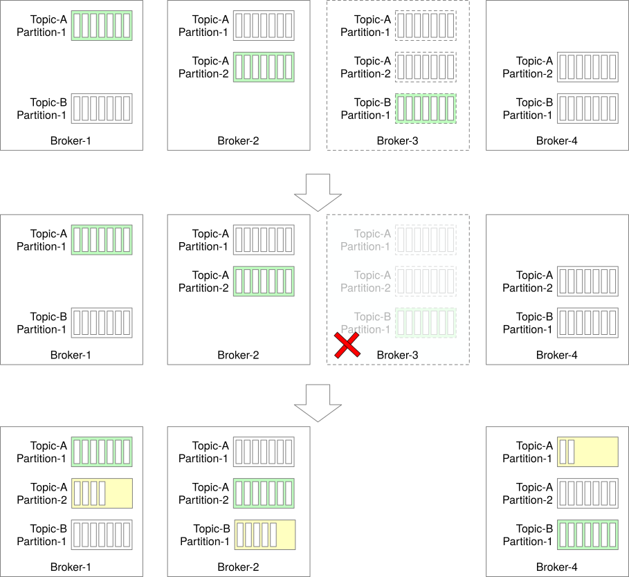
Figure 28 Broker node crashes
Let’s use an example in Figure 28 to explain how failure recovery works.
-
Assume there are 4 brokers and the partition (replica) distribution plan is shown below:
-
Partition 1 of topic A: replicas in broker 1 (leader), 2, and 3.
-
Partition 2 of topic A: replicas in broker 2 (leader), 3, and 4.
-
Partition 1 of topic B: replicas in broker 3 (leader), 4, and 1.
-
Broker 3 crashes, which means all the partitions on the node are lost. The partition distribution plan is changed to:
-
Partition 1 of topic A: replicas in broker 1 (leader) and 2.
-
Partition 2 of topic A: replicas in broker 2 (leader) and 4.
-
Partition 1 of topic B: replicas in broker 4 and 1.
-
The broker controller detects broker 3 is down and generates a new partition distribution plan for the remaining broker nodes:
-
Partition 1 of topic A: replicas in broker 1 (leader), 2, and 4 (new).
-
Partition 2 of topic A: replicas in broker 2 (leader), 4, and 1 (new).
-
Partition 1 of topic B: replicas in broker 4 (leader), 1, and 2 (new).
-
The new replicas work as followers and catch up with the leader.
To make the broker fault-tolerant, here are additional considerations:
-
The minimum number of ISRs specifies how many replicas the producer must receive before a message is considered to be successfully committed. The higher the number, the safer. But on the other hand, we need to balance latency and safety.
-
If all replicas of a partition are in the same broker node, then we cannot tolerate the failure of this node. It is also a waste of resources to replicate data in the same node. Therefore, replicas should not be in the same node.
-
If all the replicas of a partition crash, the data for that partition is lost forever. When choosing the number of replicas and replica locations, there’s a trade-off between data safety, resource cost, and latency. It is safer to distribute replicas across data centers, but this will incur much more latency and cost, to synchronize data between replicas. As a workaround, data mirroring can help to copy data across data centers, but this is out of scope. The reference material [14] covers this topic.
Now let’s get back to discussing the scalability of brokers. The simplest solution would be to redistribute the replicas when broker nodes are added or removed.
However, there is a better approach. The broker controller can temporarily allow more replicas in the system than the number of replicas in the config file. When the newly added broker catches up, we can remove the ones that are no longer needed. Let’s use an example as shown in Figure 29 to understand the approach.
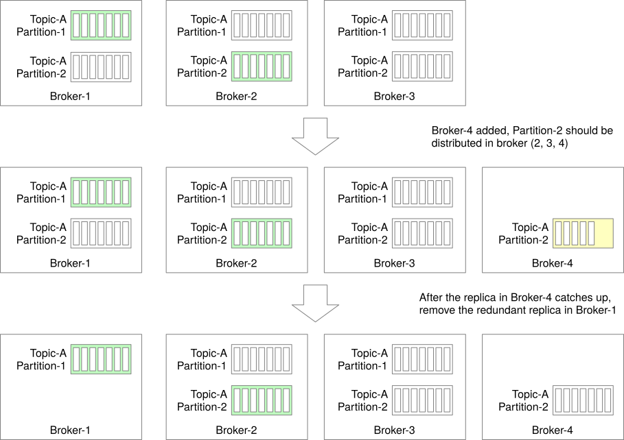
Figure 29 Add new broker node
-
The initial setup: 3 brokers, 2 partitions, and 3 replicas for each partition.
-
New broker 4 is added. Assume the broker controller changes the replica distribution of partition 2 to the broker (2, 3, 4). The new replica in broker 4 starts to copy data from leader broker 2. Now the number of replicas for partition 2 is temporarily more than 3.
-
After the replica in broker 4 catches up, the redundant partition in broker 1 is gracefully removed.
By following this process, data loss while adding brokers can be avoided. A similar process can be applied to remove brokers safely.
Partition
For various operational reasons, such as scaling the topic, throughput tuning, balancing availability/ throughput, etc., we may change the number of partitions. When the number of partitions changes, the producer will be notified after it communicates with any broker, and the consumer will trigger consumer rebalancing. Therefore, it is safe for both the producer and consumer.
Now let’s consider the data storage layer when the number of partitions changes. As in Figure 30, we have added a partition to the topic.
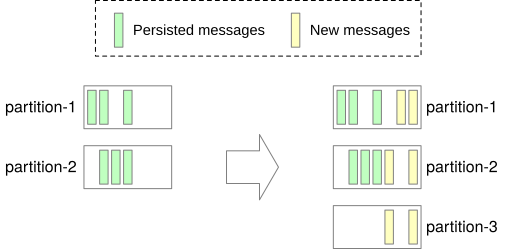
Figure 30 Partition increase
-
Persisted messages are still in the old partitions, so there’s no data migration.
-
After the new partition (partition-3) is added, new messages will be persisted in all 3 partitions.
So it is straightforward to scale the topic by increasing partitions.
Decrease the number of partitions
Decreasing partitions is more complicated, as illustrated in Figure 31.
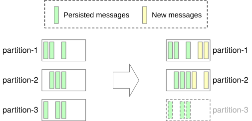
Figure 31 Partition decrease
-
Partition-3 is decommissioned so new messages are only received by the remaining partitions (partition-1 and partition-2).
-
The decommissioned partition (partition-3) cannot be removed immediately because data might be currently consumed by consumers for a certain amount of time. Only after the configured retention period passes, data can be truncated and storage space is freed up. Reducing partitions is not a shortcut to reclaiming data space.
-
During this transitional period (while partition-3 is decommissioned), producers only send messages to the remaining 2 partitions, but consumers can still consume from all 3 partitions. After the retention period of the decommissioned partition expires, consumer groups need rebalancing.
Data delivery semantics¶
Now that we understand the different components of a distributed message queue, let’s discuss different delivery semantics: at-most once, at-least once, and exactly once.
At-most once¶
As the name suggests, at-most once means a message will be delivered not more than once. Messages may be lost but are not redelivered. This is how at-most once delivery works at the high level.
-
The producer sends a message asynchronously to a topic without waiting for an acknowledgment (ack=0). If message delivery fails, there is no retry.
-
Consumer fetches the message and commits the offset before the data is processed. If the consumer crashes just after offset commit, the message will not be re-consumed.
Figure 32 At-most once
It is suitable for use cases like monitoring metrics, where a small amount of data loss is acceptable.
At-least once¶
With this data delivery semantic, it’s acceptable to deliver a message more than once, but no message should be lost. Here is how it works at a high level.
-
Producer sends a message synchronously or asynchronously with a response callback, setting ack=1 or ack=all, to make sure messages are delivered to the broker. If the message delivery fails or timeouts, the producer will keep retrying.
-
Consumer fetches the message and commits the offset only after the data is successfully processed. If the consumer fails to process the message, it will re-consume the message so there won’t be data loss. On the other hand, if a consumer processes the message but fails to commit the offset to the broker, the message will be re-consumed when the consumer restarts, resulting in duplicates.
-
A message might be delivered more than once to the brokers and consumers.
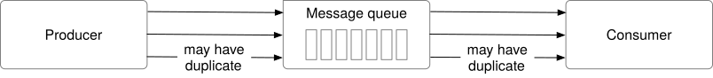
Figure 33 At-least once
Use cases: With at-least once, messages won’t be lost but the same message might be delivered multiple times. While not ideal from a user perspective, at-least once delivery semantics are usually good enough for use cases where data duplication is not a big issue or deduplication is possible on the consumer side. For example, with a unique key in each message, a message can be rejected when writing duplicate data to the database.
Exactly once¶
Exactly once is the most difficult delivery semantic to implement. It is friendly to users, but it has a high cost for the system’s performance and complexity.
Figure 34 Exactly once
Use cases: Financial-related use cases (payment, trading, accounting, etc.). Exactly once is especially important when duplication is not acceptable and the downstream service or third party doesn’t support idempotency.
Advanced features¶
In this section, we talk briefly about some advanced features, such as message filtering, delayed messages, and scheduled messages.
Message filtering¶
A topic is a logical abstraction that contains messages of the same type. However, some consumer groups may only want to consume messages of certain subtypes. For example, the ordering system sends all the activities about the order to a topic, but the payment system only cares about messages related to checkout and refund.
One option is to build a dedicated topic for the payment system and another topic for the ordering system. This method is simple, but it might raise some concerns.
-
What if other systems ask for different subtypes of messages? Do we need to build dedicated topics for every single consumer request?
-
It is a waste of resources to save the same messages on different topics.
-
The producer needs to change every time a new consumer requirement comes, as the producer and consumer are now tightly coupled.
Therefore, we need to resolve this requirement using a different approach. Luckily, message filtering comes to the rescue.
A naive solution for message filtering is that the consumer fetches the full set of messages and filters out unnecessary messages during processing time. This approach is flexible but introduces unnecessary traffic that will affect system performance.
A better solution is to filter messages on the broker side so that consumers will only get messages they care about. Implementing this requires some careful consideration. If data filtering requires data decryption or deserialization, it will degrade the performance of the brokers. Additionally, if messages contain sensitive data, they should not be readable in the message queue.
Therefore, the filtering logic in the broker should not extract the message payload. It is better to put data used for filtering into the metadata of a message, which can be efficiently read by the broker. For example, we can attach a tag to each message. With a message tag, a broker can filter messages in that dimension. If more tags are attached, the messages can be filtered in multiple dimensions. Therefore, a list of tags can support most of the filtering requirements. To support more complex logic such as mathematical formulae, the broker will need a grammar parser or a script executor, which might be too heavyweight for the message queue.
With tags attached to each message, a consumer can subscribe to messages based on the specified tag, as shown in Figure 35. Interested readers can refer to the reference material [15].
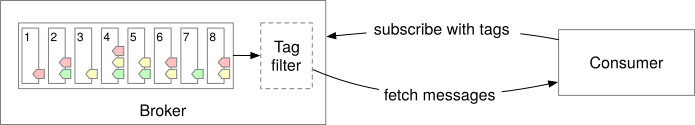
Figure 35 Message filtering by tags
Delayed messages & Scheduled messages¶
Sometimes you want to delay the delivery of messages to a consumer for a specified period of time. For example, an order should be closed if not paid within 30 minutes after the order is created. A delayed verification message (check if the payment is completed) is sent immediately but is delivered to the consumer 30 minutes later. When the consumer receives the message, it checks the payment status. If the payment is not completed, the order will be closed. Otherwise, the message will be ignored.
Different from sending instant messages, we can send delayed messages to temporary storage on the broker side instead of to the topics immediately, and then deliver them to the topics when time’s up. The high-level design for this is shown in Figure 36.
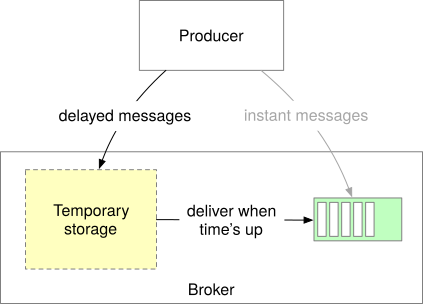
Figure 36 Delayed messages
Core components of the system include the temporary storage and the timing function.
-
The temporary storage can be one or more special message topics.
-
The timing function is out of scope, but here are 2 popular solutions:
-
Dedicated delay queues with predefined delay levels [16]. For example, RocketMQ doesn’t support delayed messages with arbitrary time precision, but delayed messages with specific levels are supported. Message delay levels are 1s, 5s, 10s, 30s, 1m, 2m, 3m, 4m, 6m, 8m, 9m, 10m, 20m, 30m, 1h, and 2h.
-
Hierarchical time wheel [17].
A scheduled message means a message should be delivered to the consumer at the scheduled time. The overall design is very similar to delayed messages.
Step 4 - Wrap Up¶
In this chapter, we have presented the design of a distributed message queue with some advanced features commonly found in data streaming platforms. If there is extra time at the end of the interview, here are some additional talking points:
-
Protocol: it defines rules, syntax, and APIs on how to exchange information and transfer data between different nodes. In a distributed message queue, the protocol should be able to:
-
Cover all the activities such as production, consumption, heartbeat, etc.
-
Effectively transport data with large volumes.
-
Verify the integrity and correctness of the data.
Some popular protocols include Advanced Message Queuing Protocol (AMQP) [18] and Kafka protocol [19].
-
Retry consumption. If some messages cannot be consumed successfully, we need to retry the operation. In order not to block incoming messages, how can we retry the operation after a certain time period? One idea is to send failed messages to a dedicated retry topic, so they can be consumed later.
-
Historical data archive. Assume there is a time-based or capacity-based log retention mechanism. If a consumer needs to replay some historical messages that are already truncated, how can we do it? One possible solution is to use storage systems with large capacities, such as HDFS or object storage, to store historical data.
Congratulations on getting this far! Now give yourself a pat on the back. Good job!
Chapter summary¶
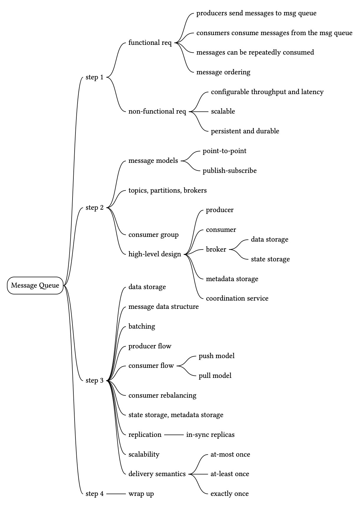
Reference Materials¶
[1] Queue Length Limit: https://www.rabbitmq.com/docs/maxlength
[2] Apache ZooKeeper - Wikipedia:
https://en.wikipedia.org/wiki/Apache_ZooKeeper
[3] etcd: https://etcd.io/
[4] Comparison of disk and memory performance:
https://deliveryimages.acm.org/10.1145/1570000/1563874/jacobs3.jpg
{kind=link}
[5] Cyclic redundancy check: https://en.wikipedia.org/wiki/Cyclic_redundancy_check
[6] Push vs. pull: https://kafka.apache.org/documentation/#design_pull
[7] Kafka 2.0 Documentation:
https://kafka.apache.org/20/documentation.html#consumerconfigs
[8] Kafka No Longer Requires ZooKeeper:
https://towardsdatascience.com/kafka-no-longer-requires-zookeeper-ebfbf3862104
[9] Martin Kleppmann. (2017). ‘Replication’ in Designing Data-Intensive Applications. O'Reilly Media. pp. 151-197
[10] ISR in Apache Kafka:
https://www.cloudkarafka.com/docs/dictionary.html
[11] Apache Kafka allow consumers fetch from closest replica:
[12] Hands-free Kafka Replication:
https://www.confluent.io/blog/hands-free-kafka-replication-a-lesson-in-operational-simplicity/
[13] Kafka high watermark: https://rongxinblog.wordpress.com/2016/07/29/kafka-high-watermark/
[14] Kafka mirroring: https://cwiki.apache.org/confluence/pages/viewpage.action?pageId=27846330
[15] Message filtering in RocketMQ: https://partners-intl.aliyun.com/help/doc-detail/29543.htm
[16] Scheduled messages and delayed messages in Apache RocketMQ:
https://partners-intl.aliyun.com/help/doc-detail/43349.htm
[17] Hashed and hierarchical timing wheels:
http://www.cs.columbia.edu/~nahum/w6998/papers/sosp87-timing-wheels.pdf
[18] Advanced Message Queuing Protocol: https://en.wikipedia.org/wiki/Advanced_Message_Queuing_Protocol
[19] Kafka protocol guide: https://kafka.apache.org/protocol
Footnotes¶
- The distribution of replicas for each partition is called a replica distribution plan ↩